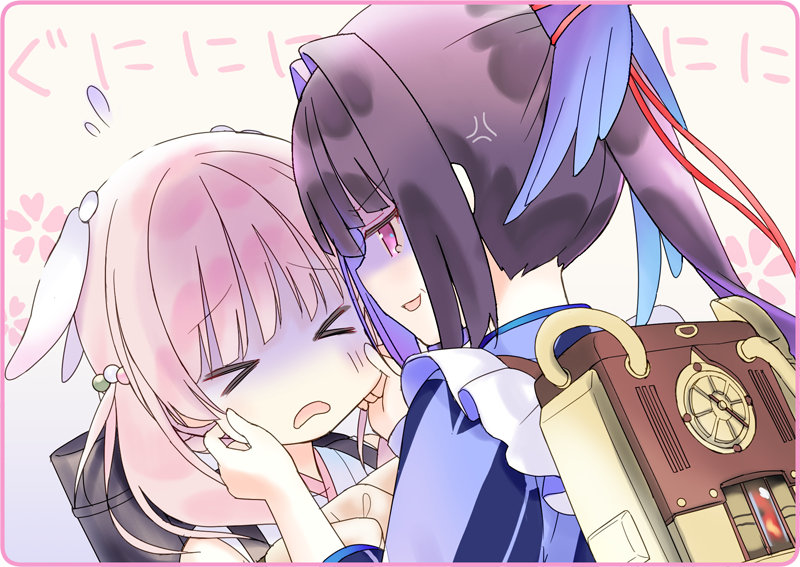

プリマドール・アンコール
01-04 喫茶・黒猫亭（１）
皇都五区。
万国港へと向かう目抜き通りをすこし外れたところにその店はあった。
もっとこぢんまりとした店構えを想像していたが、意外と大きい。
土蔵造りの二階建てには、和洋の意匠が巧みに盛り込まれている。かつてのお大尽の商家を借り上げているのだろう。
軒先に提げられた看板には『喫茶 黒猫亭』の文字。

その下で、むにゅむにゅと頬を摘ままれている少女人形。
灰桜「ごべんなさぁぁぁい……！」
灰桜の頬をむにむにむにと揉んでいるのは、すこし年上の外装をした人形。
ひとつに結んだ黒い髪が、塗れたような光沢を放っている。
「ま、まあまあ、その辺りで」
力加減は心得ているようで、痛くは無さそうだが、一応間に入る。
灰桜「こ、こちらご紹介します、宇佐美さんこと、うささんです！」
「逆だけど、まあいいや」
灰桜「そして、こちらがわたしの先輩の……」
灰桜が口を開く前に、にっこりと微笑みを向けてくれた。
灰桜「それは話せば長くなるのですが……深い深い事情がありまして」
もごもごしながら、指先をくるくる弄んでいる。
「灰桜、お金落としちゃったみたいで」
灰桜「みゅっ」
「だから、パン屋でバイトしていたんです」
灰桜「みゅみゅっ」
「一生懸命働いて、この通りパンを入手したので、どうか怒らないでくださいっ」
灰桜「そ、そーです！ 終わりよければすべて……うみゅっ！」
灰桜「すびばせぇん……！」
じっとり半目で呆れながら、また頬をむにむにむにむに。
灰桜「わかりばせぇん……出発前にシャノちゃんと遊んだときはあったのですがぁぁ…！」
鴉羽、ぱっと手を離して軒先を見る。
ちょうど日向になっている場所に、一匹のずんぐりとした黒猫が丸まっている。
どうやら、この猫がシャノちゃんらしい。
脇の下に手を差し込む。
そっと抱き上げると、だらしなく胴体が伸びた。まだふてぶてしく眠ったままだ。
灰桜「あーーーーっ！」
さっきまで寝ていた場所を確認して、灰桜は声を上げる。
小さな封筒が、その下に敷かれていた。
灰桜「お金ですっ」
「ははぁ……こんな所にあったとはね」
灰桜「めっ、ですねー」
ほのぼのと灰桜は微笑んでいる。
灰桜「うみゅっ！」
灰桜「すびばせぇん……！」
またぐにぐにと、お餅みたいにほっぺたを揉まれていた。
執筆：丘野塔也 挿絵：まろやか ＣＶ：楠木ともり（鴉羽）
©VISUAL ARTS / Key
Bản dịch tiếng Việt thực hiện bởi Vietnam Key FanClub